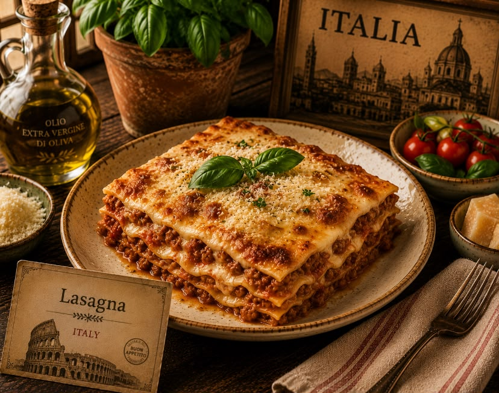
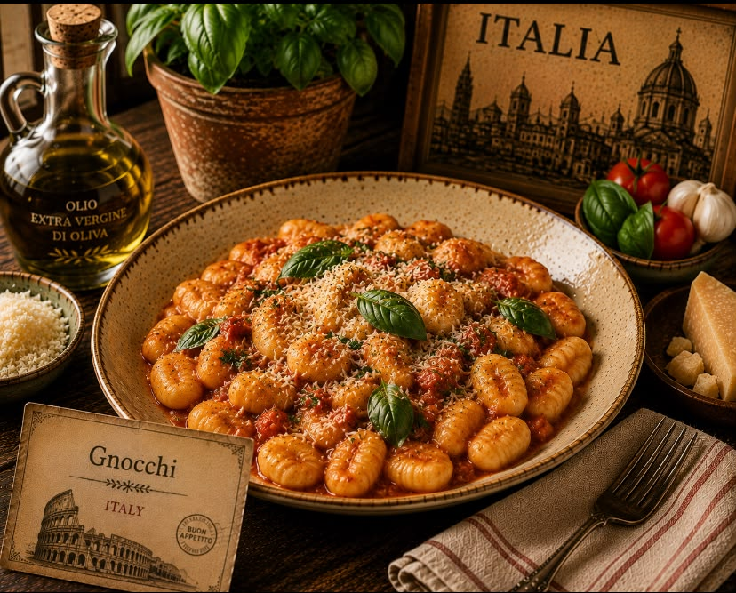
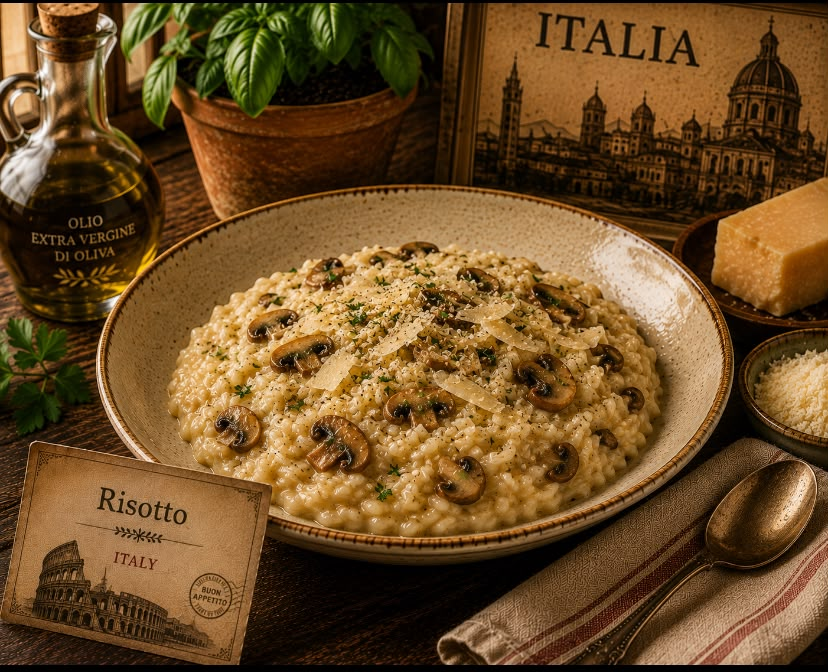
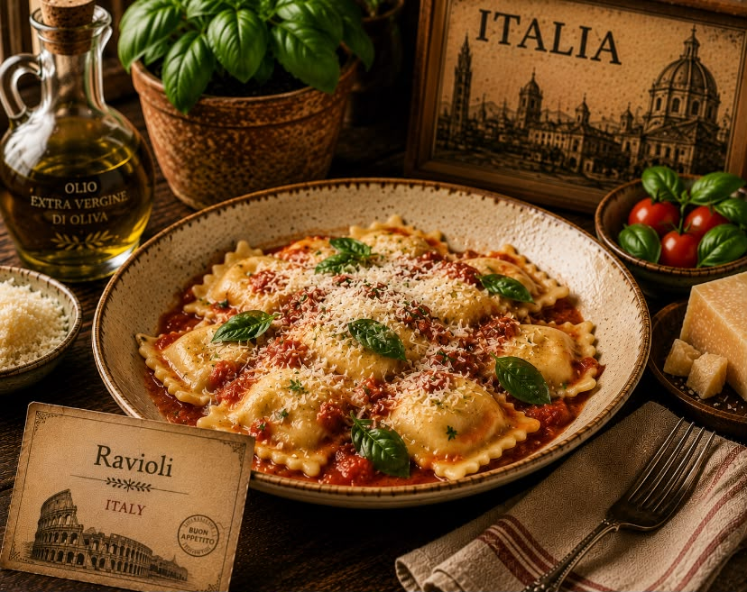

Six beloved recipes from the heart of Italian cuisine — from the wood-fired pizzerias of Naples to warm family tables across Italy. Every dish, every ingredient, every step inspired by traditional Italian cooking.



Click any dish to explore its full recipe and ingredient details.
Classic Italian pizza
A thin, airy crust topped with San Marzano tomatoes, fresh mozzarella, basil and extra-virgin olive oil.

Creamy Roman pasta
Silky spaghetti tossed with egg yolks, Pecorino Romano, crispy guanciale and freshly ground black pepper.
Layered pasta classic
Layers of pasta, rich beef ragù, creamy béchamel and Parmesan baked until bubbling and golden.

Creamy Italian rice
Arborio rice slowly cooked with warm stock, onion, Parmesan and butter until rich, creamy and perfectly al dente.

Stuffed Italian pasta
Delicate pasta parcels filled with creamy ricotta and spinach, served with a simple butter and sage sauce.
Soft potato dumplings
Tender potato dumplings made with flour and egg, boiled until light and finished with butter, sage and Parmesan.
Classic Italian pizza
Pizza Margherita is one of Italy's most iconic dishes. It combines a thin, airy pizza dough with tomato, fresh mozzarella, basil and olive oil. The key is a very hot oven that creates a crisp edge while keeping the center soft and tender.
Mix flour, yeast, water and salt to form a soft dough. Knead until smooth, then cover and let rise until doubled in size.
Crush the San Marzano tomatoes by hand and season lightly with salt.
Divide the dough into two portions. Stretch each portion gently by hand into a round, leaving a slightly thicker edge.
Spread a thin layer of tomato over the dough. Add pieces of fresh mozzarella, basil leaves and a drizzle of olive oil.
Bake in a preheated oven at the highest temperature possible until the crust is puffed, spotted and golden and the cheese has melted.
Remove from the oven, add fresh basil and a final drizzle of extra-virgin olive oil. Serve immediately.
7 ingredients
Preheat your oven and baking surface for at least 30–45 minutes. Pizza needs intense heat to develop a beautifully puffed and crisp crust.
Makes two small traditional-style pizzas.
Classic Roman pasta
Traditional Roman carbonara is made without cream. The sauce comes from egg yolks, finely grated Pecorino Romano, rendered guanciale fat and starchy pasta water. Freshly ground black pepper gives the dish its signature flavor.
Whisk the egg yolks with finely grated Pecorino Romano and plenty of freshly ground black pepper until thick and creamy.
Cut the guanciale into small pieces and cook in a dry pan over medium-low heat until golden and crisp. Keep the rendered fat in the pan.
Boil spaghetti or rigatoni in well-salted water until al dente. Reserve at least one cup of pasta water before draining.
Add the hot pasta to the pan with the guanciale and toss well so the pasta is coated with the rendered fat.
Remove the pan from the heat. Add the egg and cheese mixture while tossing continuously. Add pasta water little by little until glossy and creamy.
Finish with more Pecorino Romano, black pepper and crispy guanciale. Serve immediately while hot and silky.
6 ingredients
Never add the eggs while the pan is directly over high heat. Remove it from the heat first and use pasta water to create a smooth sauce without scrambling the eggs.
Serve immediately for the creamiest texture.
Layered pasta classic
Classic Italian lasagna combines sheets of pasta with a rich meat ragù, creamy béchamel and Parmesan. The layers are baked together until the sauce is bubbling and the top is beautifully golden.
Cook onion, carrot and celery in olive oil until soft. Add ground beef and cook until browned. Add tomatoes and simmer gently until thick and rich.
Melt butter in a saucepan. Whisk in flour and cook briefly. Gradually whisk in warm milk until smooth and thickened. Season with salt and a little nutmeg.
If using dried lasagna sheets that require boiling, cook them according to the package instructions. Drain and lay them flat.
Spread ragù in the bottom of a baking dish. Add pasta sheets, ragù, béchamel and Parmesan. Repeat until all ingredients are used.
Cover loosely with foil and bake at 190°C for about 30 minutes. Remove the foil and bake for another 15–20 minutes until golden and bubbling.
Allow the lasagna to rest for 10–15 minutes before slicing. Finish with extra Parmesan if desired.
10 ingredients
Let the lasagna rest before cutting. This gives the layers time to settle so each slice holds its shape instead of collapsing.
Perfect for a family dinner or Sunday Italian feast.
Creamy Italian rice
Risotto is a classic northern Italian rice dish prepared by slowly adding warm stock to rice while stirring. Arborio rice releases its starch as it cooks, creating the naturally creamy texture that makes risotto so special.
Heat the chicken or vegetable stock in a separate saucepan and keep it gently simmering.
Heat olive oil and half the butter in a wide pan. Cook the finely chopped onion until soft and translucent.
Add the Arborio rice and stir for 1–2 minutes until the grains are lightly toasted and coated with fat.
Add one ladle of warm stock at a time, stirring frequently. Wait until most of the liquid is absorbed before adding the next ladle.
Continue adding stock for about 18–20 minutes until the rice is creamy but still slightly firm in the center.
Remove from heat and stir in the remaining butter and Parmesan. Season with salt and black pepper, then rest for 2 minutes before serving.
7 ingredients
Add the stock gradually and stir frequently. The slow release of starch is what gives risotto its signature creamy texture without needing cream.
Serve immediately while the risotto is soft and creamy.
Ricotta & spinach stuffed pasta
Ravioli are delicate Italian pasta parcels filled with a mixture of ricotta, spinach, Parmesan and seasoning. They are gently boiled and traditionally served with a simple butter and sage sauce that lets the filling shine.
Mix flour and eggs to form a firm dough. Knead until smooth, wrap and rest for about 30 minutes.
Cook the spinach until wilted, squeeze out excess water and chop finely. Mix with ricotta, Parmesan, salt, pepper and a small pinch of nutmeg.
Divide the dough into portions and roll each portion through a pasta machine until very thin.
Place small portions of filling on one sheet of pasta, leaving space between each mound. Brush around the filling with water and cover with another pasta sheet.
Press around each filling mound to remove air, then cut into individual ravioli. Boil gently in salted water for about 3–4 minutes.
Melt butter with fresh sage leaves until fragrant. Toss the cooked ravioli gently in the butter sauce and finish with Parmesan.
8 ingredients
Do not overfill the ravioli. Press firmly around the filling to remove trapped air, which helps prevent the pasta from opening during cooking.
Best served immediately with warm butter and sage.
Soft Italian potato dumplings
Gnocchi are soft Italian potato dumplings made from cooked potatoes, flour and egg. The dough should be handled gently so the finished gnocchi remain light and tender. They are delicious with butter, sage and Parmesan.
Boil whole potatoes with their skins on until completely tender. Drain and allow them to steam dry slightly.
Peel the warm potatoes and pass them through a potato ricer or mash until completely smooth.
Spread the potato on a work surface. Add flour, egg and salt. Gently bring everything together without overworking the dough.
Divide the dough into portions and roll each into a long rope. Cut into small pieces and gently roll over a fork to create ridges.
Cook the gnocchi in a large pot of salted boiling water. When they float to the surface, cook for another 30–60 seconds, then remove.
Melt butter in a pan with fresh sage leaves. Add the cooked gnocchi and toss gently until coated. Finish with Parmesan and black pepper.
7 ingredients
Use floury potatoes and avoid overworking the dough. Too much flour or too much kneading will make the gnocchi heavy instead of light and tender.
Serve immediately with butter, sage and freshly grated Parmesan.